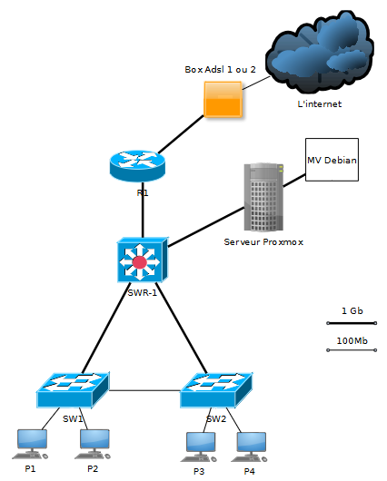
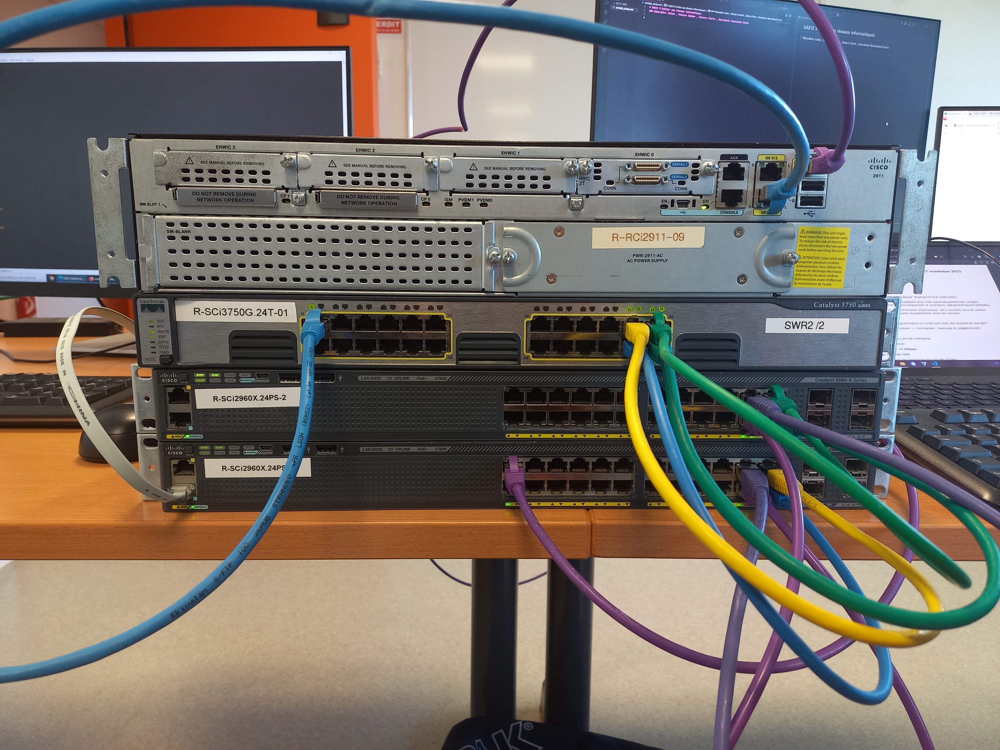

Julien RIBARDIERE
- Age: 27 ans
- Localisation: CAEN, Calvados
- Formation en cours: BUT Réseaux et Télécommunications
- Mail: julien.ribardiere14@gmail.com

L'objectif de ce projet était de monter en équipe de quatre personnes une maquette de réseau informatique en utilisant :
• 2 switchs L2 CISCO modèle 2960
• 1 switch L2/L3 CISCO modèle 3750
• 1 routeur CISCO modèle 2911
• 2 stations clientes (une avec l'OS Windows, une autre avec l'OS Debian (de la distribution Linux))
• 1 serveur PROXMOX (qui héberge un service web APACHE2 et un partage de fichiers)

De plus, nous devions créer une documentation de notre maquette, notamment concernant le plan IP de notre réseau.
NOTE : L2 et L2/L3 sont des mentions du modèle OSI.
Assister l'administrateur du réseau
• Maîtriser les lois fondamentales de l'électricité afin d'intervenir sur les équipements de réseaux et télécommunications
• Comprendre l'architecture et les fondements des systèmes numériques, les principes du codage de l'information, des communications et de l'internet
• Configurer les fonctions de base du réseau local
• Maîtriser les rôles et les principes fondamentaux des systèmes d'exploitation afin d'interagir avec ceux-ci pour la configuration et l'administration
• Identifier les dysfonctionnements du réseau local et savoir les signaler
• Installer un poste client, expliquer la procédure mise en place
Dans le cadre de ce projet, j'ai été chargé de la communication entre les deux stations hôtes et le routeur par l'intermédiaire des switchs.
J'ai donc :
• Créé les VLAN et les ai assignés à des interfaces (modification du VLAN natif pour des raisons de sécurité)
• Mis en place 3 liens agrégés entre les 3 switchs
• Configuré la sécurité des switchs et du routeur en désactivant TELNET et en activant SSH
En raison des difficultés rencontrées par mon collègue concernant le routage des paquets entre les clients et le serveur PROXMOX, j'ai participé à la recherche sur le routage statique et l'inter-VLAN.
Enfin, j'ai aussi été chargé de la distribution des tâches via TRELLO ainsi que de leur planification via un diagramme de GANTT.
Le projet que nous avons pu réaliser fut une réussite puisque notre maquette était fonctionnelle, nous permettant d'obtenir une très bonne note, même s'il y a eu quelques petits oublis comme la désactivation des protocoles http/https sur le matériel réseau.

Étant donné que je faisais partie de la même équipe ayant réalisé le projet intitulé Se sensibiliser à l'hygiène informatique, la coordination a été excellente.
Cependant, un de mes collègues et moi avons perdu du temps inutilement en raison de l’absence de communication entre les stations clientes et le matériel réseau en SSH, causée par l’effacement de la configuration suivi de leur redémarrage (un effacement qui fut nécessaire suite à un problème de réseau).
Heureusement, connaissant les commandes à utiliser, il m'a fallu 2 heures pour tout reconfigurer. Toutefois, la connexion SSH est restée impossible malgré mes recherches, qui ont duré environ 8 heures sur le sujet.
Ce qui nous a sauvés, c'est que la connexion SSH n'était pas demandée par le projet.
Par la suite, j’ai appris que la solution à ce problème aurait été de mettre à jour les équipements réseau afin qu’ils acceptent les connexions SSH, car ceux que nous utilisions étaient devenus obsolètes.
Je fais une mention concernant l'oubli de la désactivation des protocoles http/https puisque j'ai oublié de les réinstaller suite à la suppression des configurations.
{kind=link}